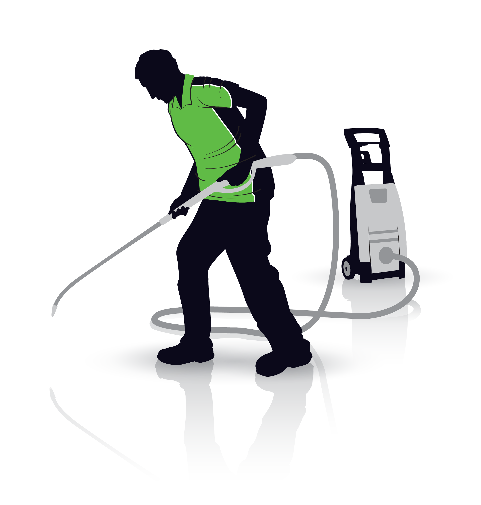
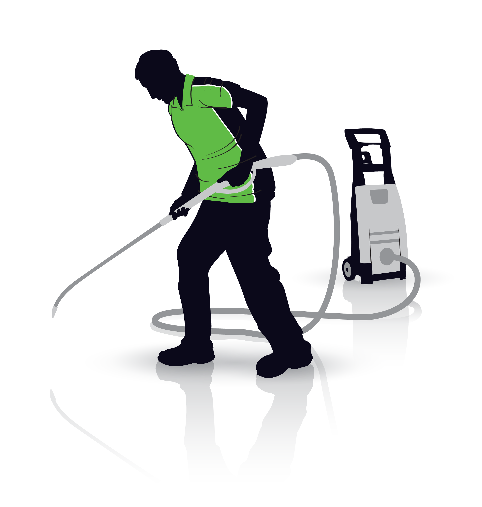
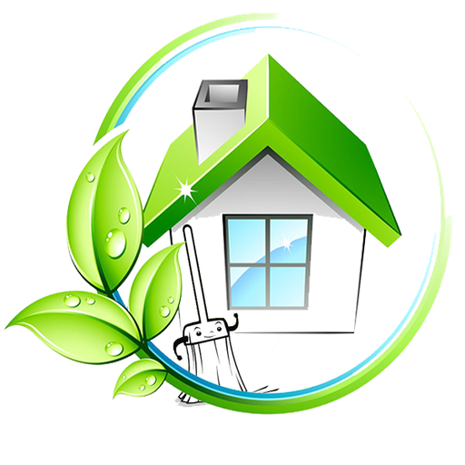
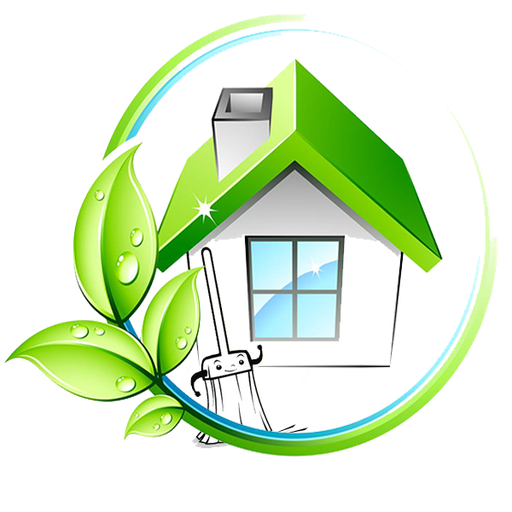

Über uns
Herzlich willkommen bei gClean – Ihrem zuverlässigen Partner für professionelle Gebäudereinigung. Wir verstehen, dass Sauberkeit nicht nur eine Frage der Hygiene, sondern auch des Wohlbefindens ist. Unser engagiertes Team von Fachkräften bringt nicht nur umfangreiche Erfahrung in der Büro- und Praxisreinigung mit, sondern auch eine Leidenschaft für höchste Qualitätsstandards.
Bei gClean24 setzen wir alles daran, Ihnen eine makellose Sauberkeit und Hygiene zu garantieren. Jeder Raum, den wir betreuen, wird mit größter Sorgfalt behandelt, denn wir wissen, dass ein sauberer Arbeitsplatz die Produktivität steigert und einen positiven Eindruck hinterlässt. Wir arbeiten eng mit unseren Kunden zusammen, um individuelle Reinigungslösungen zu entwickeln, die auf Ihre spezifischen Bedürfnisse zugeschnitten sind.
Unser Leistungsspektrum reicht von der gründlichen Reinigung von Büros und Praxen bis hin zu speziellen Dienstleistungen wie Fensterreinigung und Treppenhauspflege. Dabei verwenden wir umweltfreundliche Produkte und moderne Techniken, um optimale Ergebnisse zu erzielen und gleichzeitig die Umwelt zu schützen.
Vertrauen Sie uns, um Ihre Räumlichkeiten in einem perfekten Zustand zu halten. Lassen Sie uns die Arbeit erledigen, damit Sie sich auf das Wesentliche konzentrieren können – Ihr Geschäft und Ihre Kunden. Bei gClean24 stehen Ihre Zufriedenheit und das Wohlbefinden Ihrer Mitarbeiter im Mittelpunkt unseres Handelns.
Entscheiden Sie sich für gClean24 und erleben Sie den Unterschied, den professionelle Gebäudereinigung machen kann!


 

 
